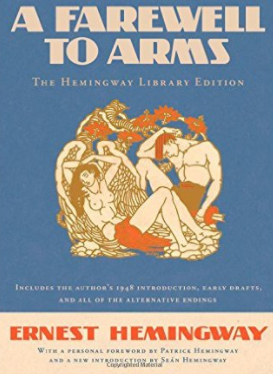

Ernest Hemingway - Author
~ • ~ • ~ • ~ • ~
A Farewell to Arms
A Farewell to Arms is a novel by Ernest Hemingway set during the Italian campaign of World War I. The book, published in 1929, is a first-person account of American Frederic Henry, serving as a Lieutenant ("Tenente") in the ambulance corps of the Italian Army. The title is taken from a poem by 16th-century English dramatist George Peele.
A Farewell to Arms is a novel by Ernest Hemingway set during the Italian campaign of World War I. The book, published in 1929, is a first-person account of American Frederic Henry, serving as a Lieutenant ("Tenente") in the ambulance corps of the Italian Army. The title is taken from a poem by 16th-century English dramatist George Peele.
The novel has been adapted for the stage, initially in 1930 and subsequently, for film in 1932 and 1957, and as a television miniseries in 1966. The 1996 film In Love and War, directed by Richard Attenborough and starring Chris O'Donnell and Sandra Bullock, depicts Hemingway's life in Italy as an ambulance driver in the events prior to his writing of A Farewell to Arms.
~ • ~
'In the late summer of that year we lived in a house in a village that looked across the river and the plain to the mountains. In the bed of the river there were peb- bles and boulders, dry and white in the sun, and the water was clear and swiftly moving and blue in the channels. Troops went by the house and down the road and the dust they raised powdered the leaves of the trees'.